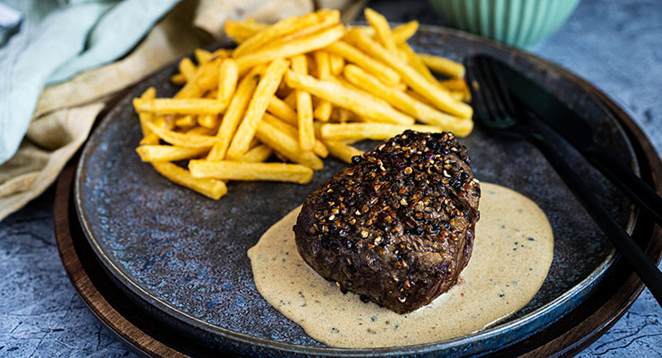

steak-au-poiver

Das Steak au Poivre, ins deutsche übertragen als ein Pfeffersteak, ist ein klassisches französisches Gericht. Der Pfeffer bildet hier eine schöne Kruste und durch den scharfen Geschmack bildet der Pfeffer einen tollen Kontrast zu dem feinen und zarten Filet Mignon.
Einkaufsliste für 2 personen
- 2 Rinderfilet (ca. 250g pro St.)
- 4 EL Pfeffer, ganz
- 2 EL Butter
- 1 Schalotte
- 1 Schuss Cognac
- 150 ml Sahne
- 150 ml Rinderfond
- Salz, etwas Öl zum anbraten
Zubereitung
- Pfefferkörner in einen Gefrierbeutel geben und mit einer Pfanne oder Fleischklopfer grob zerkleinern
- Den groben Pfeffer auf einen Teller geben
- Das Filet von beiden Seiten salzen und mit einer Seite auf den Pfeffer legen und etwas andrücken, damit der Pfeffer haften bleibt
- Öl in einer Pfanne erhitzen und das Filet erst auf nicht gepfefferten Seite anbraten
- Filet wenden und die Butter dazugeben (dadurch verbrennt der Pfeffer nicht)
- Wie lange das Fleisch auf einer Seite brät, richtet sich ungefähr nach der Dicke: 1cm = 1 Minute
- Das Fleisch herausnehmen und im Ofen bei 120°C auf Kerntemperatur ziehen
- Nachdem das Fleisch im Ofen ist, den Cognac in die Pfanne geben um den Bratenansatz zu lösen
- Dann den Fond, die Sahne und ein paar zerstossene Pfefferkörner in die Pfanne geben und mindestens auf die Hälfte einreduzieren lassen
- Gegen Ende die Soße mit Salz abschmecken
- Soßenspiegel auf den Teller geben und Filet darauf setzen - Guten Appetit